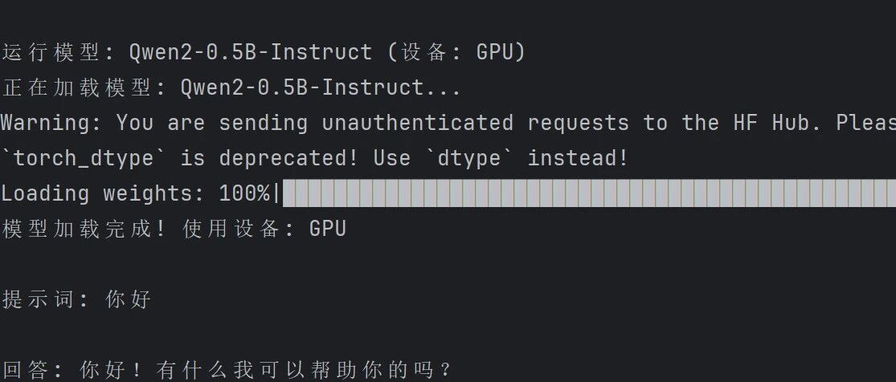

将Transformer部署在GPU上
目录
背景与目标
有关的理论知识
1 CUDA 与 PyTorch GPU 绑定
2 虚拟环境
3
.condarc配置文件4 whl 文件与 GPU 版本安装
环境配置步骤
3.1 确认系统环境
3.2 创建虚拟环境
3.3 安装 PyTorch GPU 版本
3.4 验证 PyTorch GPU 是否成功安装
3.5 链接 PyTorch 与 PyCharm
运行 Qwen2-0.5B 模型
常见问题与解决方案
1. 背景与目标
在深度学习开发中，GPU 加速是提升训练与推理效率的关键。PyTorch 作为主流框架，需正确配置 GPU 版本才能利用 NVIDIA 显卡的并行计算能力。本文档旨在记录一套完整的、可复现的 PyTorch GPU 环境搭建流程，包括：
在 Windows 系统上，将 Anaconda 环境及 PyTorch 完全安装在 D 盘，避免占用系统盘。
使用国内镜像源和手动下载 whl 文件的方式，快速安装与系统 CUDA 兼容的 PyTorch GPU 版本。
解决常见的版本冲突（如 NumPy）和网络问题。
在 PyCharm 中配置该环境，并成功运行 Qwen2-0.5B 模型，验证环境可用性。
通过本文档，读者可快速搭建稳定、隔离的 PyTorch GPU 开发环境，并理解背后的关键概念。
1. 我们计算机系统的CUDA 需要与 PyTorch GPU 绑定
CUDA：NVIDIA 的并行计算平台，允许开发者利用 GPU 进行通用计算（如深度学习）。系统 CUDA 版本由显卡驱动决定（
nvidia-smi查看），驱动支持向下兼容（高版本驱动可运行低版本 CUDA 编译的程序）。PyTorch GPU 版：PyTorch 在编译时链接特定 CUDA 版本（如 CUDA 12.4），并打包相关库。安装时需选择与系统驱动兼容的版本（例如系统 CUDA 12.7 可运行 CUDA 12.4 编译的 PyTorch）。
绑定原理：PyTorch 通过
torch.cuda封装底层 CUDA API。张量（Tensor）具有device属性，可显式分配至 GPU（.to('cuda')）；模型通过.to('cuda')将参数移至 GPU，后续计算自动在 GPU 执行。计算采用异步流机制，CPU 提交任务后立即返回，GPU 并行执行。
2. 需要创建虚拟环境
定义：隔离的 Python 运行环境，拥有独立的 Python 解释器和第三方库。我们需要将解释器在这个环境里面运行。
作用：避免项目间依赖冲突；便于环境复现与迁移。Conda 是常用的管理工具，可指定环境路径（如 D 盘）。
3. .condarc 配置文件
作用：Conda 的配置文件，控制默认通道、镜像源、环境存储路径、包缓存路径等。
常用配置：添加国内镜像源（如清华源）加速下载；修改
envs_dirs和pkgs_dirs将环境和包缓存存至 D 盘，避免占用系统盘。
4. whl 文件与 GPU 版本安装
whl 文件：PyTorch 预编译的二进制包（Wheel），安装时无需编译，速度快。
GPU 版本标识：文件名含
+cu标识，如torch-2.4.0+cu124-cp310-cp310-win_amd64.whl，表示该包内置了 CUDA 12.4 支持。必须从 PyTorch 官方源或镜像下载，默认 PyPI 仅提供 CPU 版本。安装方式：可通过
pip install --index-url指定 PyTorch 官方源，或手动下载 whl 后本地安装，确保获取 GPU 支持。注意：查看你系统的CUDA版本，下载它匹配的PyTorch版本
3. 环境配置步骤
3.1 确认系统环境
打开命令行，运行
nvidia-smi，查看右上角 CUDA 版本（本例为 12.7）。确保显卡驱动版本满足所需 CUDA 的最低要求（例如 CUDA 12.4 要求驱动 ≥ 525.60.13）。可以自己查一下你们对应的版本。
3.2 创建虚拟环境
conda create --prefix D:\Pytorch\pytorch_gpu_env python=3.10 -yconda activate D:\Pytorch\pytorch_gpu_env
在命令行中先输入第一句创建虚拟环境，处理完毕之后输入第二句话以激活。我这个地址是我自己安装的地址，读者需要自己调整。
验证方法：命令提示符前会显示 (D:\Pytorch\pytorch_gpu_env)：

3.3 安装 PyTorch GPU 版本
方法一（推荐）：手动下载 whl 文件并本地安装
下载对应 Python 3.10、Windows 64 位、CUDA 12.4 的 whl 文件（文件名含
+cu124）（检查自己电脑支持的版本并且下载）这些是链接名：
torch-2.4.0+cu124-cp310-cp310-win_amd64.whl（约 2.5 GB）
torchvision-0.19.0+cu124-cp310-cp310-win_amd64.whl（约 5.7 MB）
torchaudio-2.4.0+cu124-cp310-cp310-win_amd64.whl（约 4 MB）
若官方链接无法直接下载，可使用国内镜像（如阿里云、清华）的同名文件。

阿里云：按首字母找到这些文件（可 Ctrl+F 搜索
torch-2.4.0+cu124）。用浏览器/迅雷等下载（约10min）
将文件放入
D:\Pytorch\目录（你的安装位置），然后在激活的环境中执行安装：pip install D:\Pytorch\torch-2.4.0+cu124-cp310-cp310-win_amd64.whlpip install D:\Pytorch\torchvision-0.19.0+cu124-cp310-cp310-win_amd64.whlpip install D:\Pytorch\torchaudio-2.4.0+cu124-cp310-cp310-win_amd64.whl
方法二（网络良好时）：使用 pip 直接从官方源安装
命令行输入：
pip install torch torchvision torchaudio --index-url https://download.pytorch.org/whl/cu124官方源网速慢，不一定下载成功。
3.4 验证 PyTorch GPU 是否成功安装
import torchprint(torch.cuda.is_available()) # 应为 Trueprint(torch.__version__) # 应包含 +cu124

如果成功，则会显示以上内容，如果输出 False 或版本号不带 +cu，则说明 GPU 版本未安装成功。。
注意：PyTorch 2.4.0 基于 NumPy 1.x 编译，若环境中安装了 NumPy 2.x，会触发警告或错误。
降级 NumPy：
pip install "numpy<2"验证：
python -c "import numpy; print(numpy.__version__)" 输出 1.x 版本。
这里，我们的任务已经基本上完成了，考虑到我们需要用它来跑transformer，再装transformer库：
pip install transformers accelerate3.5 链接Pytorch与Pycharm
打开 PyCharm，进入 File → Settings → Project → Python Interpreter。
点击齿轮图标 → Add → 选择 Conda Environment（若没有，则选择系统解释器） → Existing environment。
浏览到
D:\Pytorch\pytorch_gpu_env\python.exe，确认并应用。

4. 运行 Qwen2-0.5B 模型
现在我们可以在GPU上面运行模型了！在GitHub上下载我之前的模型代码，或者用你们自己的代码。在 PyCharm 中直接运行脚本，或在终端执行：
python run_qwen.py
如图，我们的模型已经成功的跑在显卡上了。
PS：建议结束时导出环境，以便下次运行时重建：
pip freeze > requirements.txt #导出pip install -r requirements.txt #重建
5. 常见问题与解决方案
表中列出一些常见问题与解决方案：
torch.cuda.is_available()False | 2. 显卡驱动过旧。 3. CUDA 版本不兼容。 | torch.__version__ 是否含 +cu。2. 更新驱动到最新。 3. 确保 PyTorch CUDA 版本 ≤ 系统支持的版本。 |
set PYTHONHTTPSVERIFY=0；或手动下载 whl 安装。 | ||
pip install "numpy<2"。 | ||
set HF_ENDPOINT=https://hf-mirror.com（Windows）。 | ||
torch_dtype | torch_dtype 改为 dtype（但需注意旧版本可能不支持）。 | |